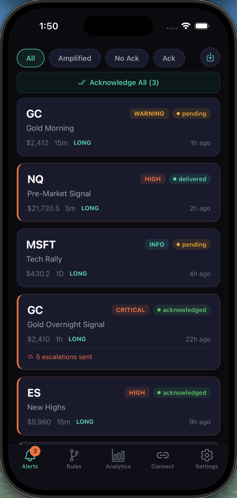
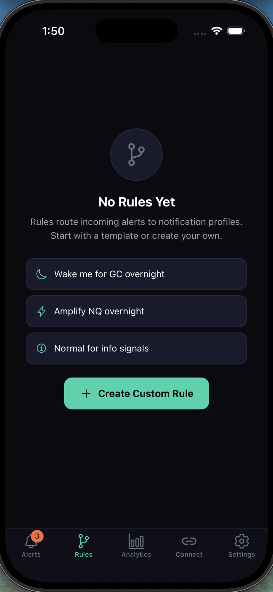
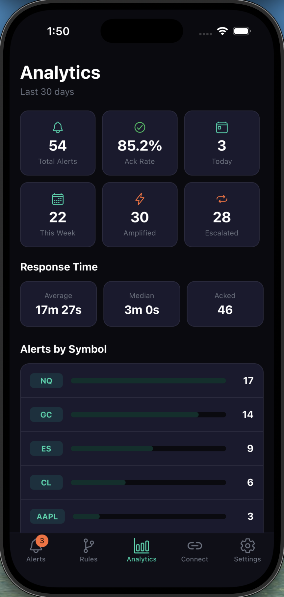
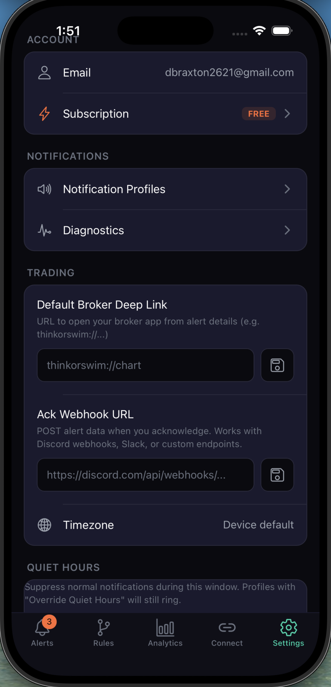

Alerts that escalate until you act — push, SMS, call. Track every signal, set custom rules, and never let a notification get buried again.

You were in a meeting. Or driving. Or sleeping. By the time you checked, the move was over. The alert did its job — it fired once. But once wasn't enough.
GC, NQ, MSFT, ES — all your alerts in one place. See tier levels (Warning, High, Critical, Info), delivery status, and escalation counts at a glance. Filter by amplified, unacknowledged, or acknowledged.
Wake you for GC overnight. Amplify NQ pre-market. Keep info signals quiet. Match by symbol, timeframe, tier, direction, and session window. Start with templates or build your own.

85.2% ack rate. 3 minute median response time. 54 total alerts tracked. See exactly how you perform — alerts by symbol, escalation counts, and response trends over 30 days.

Deep link to thinkorswim charts from any alert. Webhook acknowledgments to Discord, Slack, or custom endpoints. Quiet hours that respect your sleep — unless your rules say otherwise.

"I missed a $2,400 swing trade because my alert buzzed once while I was driving. Trade Escalator would have called me. Never again."
"The analytics page alone is worth it. I had no idea I was only catching 40% of my alerts. Now I'm at 85%+ and actually catching my setups."
"The thinkorswim deep link is genius. Alert fires, I acknowledge, and I'm looking at the chart in under 5 seconds. Seamless."
When a signal comes in, Trade Escalator delivers it as a push notification. If you don't acknowledge within your configured window, it escalates — SMS, then phone call, then any additional channels you've set up. The chain keeps going until you tap acknowledge.
Trade Escalator supports broker deep links (thinkorswim, etc.) so you can jump straight to the chart from any alert. It also supports Discord, Slack, and custom webhook endpoints for acknowledgment notifications.
Alerts come in four tiers: Info (quiet), Warning (standard), High (urgent), and Critical (maximum escalation). You set rules that match signals to tiers based on symbol, timeframe, direction, and session window.
Yes. Set a quiet hours window in Settings. Normal notifications are suppressed. But rules with "Override Quiet Hours" enabled will still ring through — perfect for overnight GC or NQ alerts.
Settings → Subscription → Cancel. One tap. No hoops. Early adopters lock in a lifetime discount — you can cancel and re-subscribe at the same rate anytime.
Early adopters get lifetime discounted pricing. $5 reserves your spot.